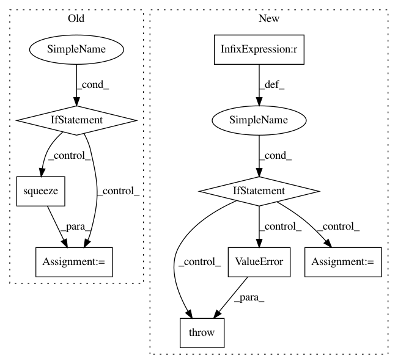

01f9d3debc2f1b35a88a2398119809835b4431f0,features/eolearn/features/interpolation.py,InterpolationTask,execute,#InterpolationTask#Any#,283
Before Change
// Prepare mask of valid data
if self.mask_feature:
mask_type, mask_name = next(self.mask_feature(eopatch))
if feature_data.shape[0] == 1:
feature_data = np.squeeze(feature_data,axis=0)
feature_data[~eopatch[mask_type][mask_name].squeeze(), :] = np.nan
// Flatten array
feature_data = np.reshape(feature_data, (time_num, height * width * band_num))
After Change
// Make a copy not to change original numpy array
feature_data = eopatch[feature_type][feature_name].copy()
time_num, height, width, band_num = feature_data.shape
if time_num <= 1:
raise ValueError("Feature {} has time dimension of size {}, required at least size "
"2".format((feature_type, feature_name), time_num))
// Apply a mask on data
feature_data = self._mask_feature_data(feature_data, eopatch)
// Flatten array
feature_data = np.reshape(feature_data, (time_num, height * width * band_num))
In pattern: SUPERPATTERN
Frequency: 3
Non-data size: 8
Instances
Project Name: sentinel-hub/eo-learn
Commit Name: 01f9d3debc2f1b35a88a2398119809835b4431f0
Time: 2018-12-14
Author: matej.aleksandrov@sinergise.com
File Name: features/eolearn/features/interpolation.py
Class Name: InterpolationTask
Method Name: execute
Project Name: arraiy/torchgeometry
Commit Name: e06eee5deec11dc03d6c4975eb9a57f2bc6edd30
Time: 2019-05-28
Author: jiangwei1993@gmail.com
File Name: kornia/utils/image.py
Class Name:
Method Name: tensor_to_image
Project Name: sentinel-hub/eo-learn
Commit Name: 059eb126d50aaebb41433961d02bf5e360a9885e
Time: 2019-05-27
Author: matej.aleksandrov@sinergise.com
File Name: geometry/eolearn/geometry/transformations.py
Class Name: VectorToRaster
Method Name: execute